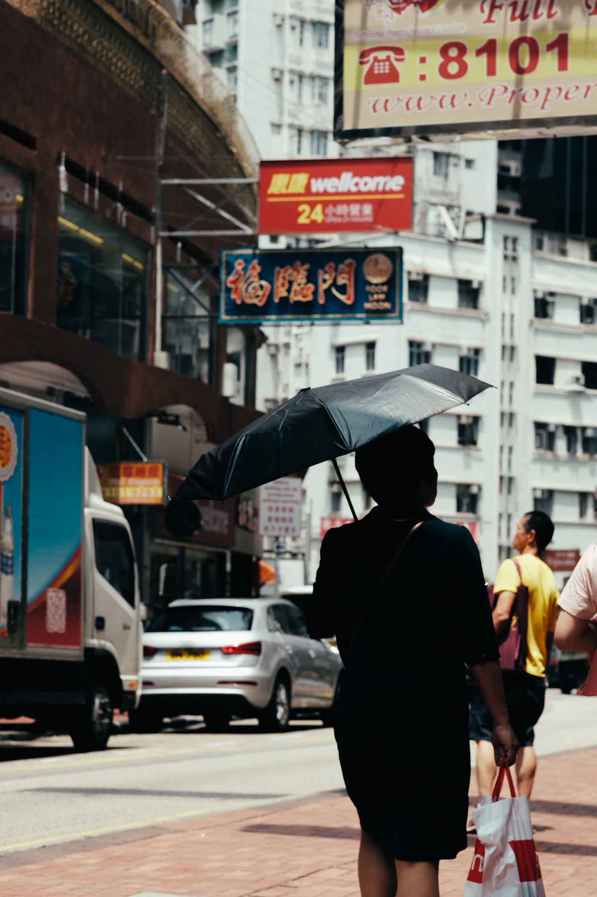

Belajar Foto / artikel konsep
Lima Hal yang Perlu Dicek Saat Foto Pertama Belum Sesuai
Jangan ubah seluruh pengaturan sekaligus. Pisahkan masalah fokus, gerak, terang, warna, dan tepi bingkai.

Foto pertama yang tidak sesuai harapan belum tentu berarti kameranya salah. Mulai dengan menyebutkan masalahnya secara khusus. Apakah subjek buram, terlalu gelap, warnanya berubah, atau ada bagian penting yang terpotong? Diagnosis yang jelas membuat latihan berikutnya lebih terarah.
1–2. Pisahkan fokus dan gerak
Jika objek yang diam terlihat tajam tetapi orang yang bergerak buram, perhatikan kecepatan rana. Jika latar tajam sementara subjek tidak, periksa titik fokus. Keduanya bisa terjadi bersamaan, jadi gunakan objek diam sebagai pembanding sebelum mengubah beberapa pengaturan.
Untuk latihan, ambil foto benda yang tidak bergerak dengan kamera ditopang. Setelah itu foto gerakan sederhana. Bandingkan bagian mana yang berubah, lalu sesuaikan satu pengaturan pada satu percobaan. Tidak ada angka tunggal yang menjamin semua gerak akan tajam.
3. Periksa terang pada subjek
Layar yang terang tidak selalu berarti subjek sudah mendapat cahaya yang cukup. Perhatikan bagian yang ingin dilihat pembaca foto: wajah, tekstur produk, atau tulisan. Coba ubah posisi terhadap sumber cahaya sebelum berharap semua masalah dapat diperbaiki saat menyunting.
Jika memakai mode otomatis, pelajari bagaimana kamera merespons jendela atau latar yang sangat terang. Ambil foto uji dan bandingkan hasilnya. Baca panduan kameramu untuk fungsi kompensasi pencahayaan dan histogram yang sesuai dengan perangkat itu.
4–5. Lihat warna dan seluruh tepi bingkai
Warna yang terasa tidak konsisten dapat berkaitan dengan campuran sumber cahaya atau white balance. Pilih satu kondisi cahaya untuk latihan dan periksa perubahan warna pada benda yang sama. Jangan terburu-buru menambahkan filter warna untuk menutupi masalah yang belum dikenali.
Terakhir, periksa empat sisi bingkai. Adakah tangan terpotong, tiang mengganggu, atau objek yang tidak sengaja masuk? Geser posisi sedikit dan ulangi. Evaluasi foto dari yang paling mendasar, lalu simpan satu catatan tentang apa yang akan dicoba selanjutnya.
Coba sendiri
Pilih satu foto yang belum sesuai. Tulis satu masalah utama dan satu tindakan untuk percobaan berikutnya. Simpan kedua foto agar kamu bisa membandingkan perubahan, bukan hanya mengandalkan ingatan.
- Gunakan alat yang tersedia dan minta izin sebelum memotret orang.
- Simpan satu catatan untuk dibandingkan pada latihan berikutnya.